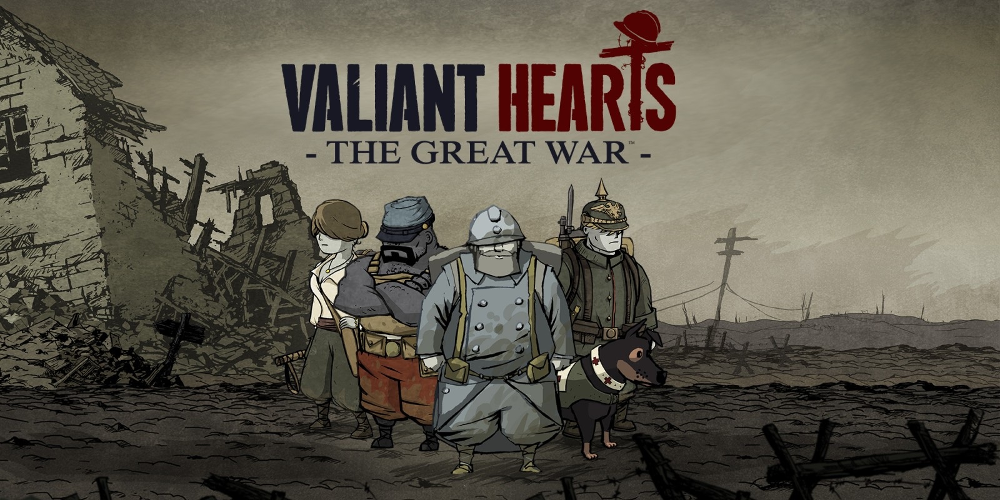

Game - Info

Assassin's cread Odyssey is the latest game in the action adventure series Assassin's creed and is set in ancient Greece trough the eyes of one out of two siblings, Kassandra and Alexios depending on the players choice. It being an open world game where the player can go anywhere from Sparta to Macedon it shows the everyday life of people in the ancient greek world.
There are also many historical characters the player will interact with, of course they are not shown as they were in terms of personality, since that can't be told however they do have their real " profession " such as the philosopher Sokrates and the historian Herodotos. The main plot of the game is, as in many games fictional and revolves around a cult that controls the greek world from the shadows. In the end it's rather hard to say that the game has a specific message after all it is made entirely for entertainment.
Valiant Hearts: The Great War centers around four individuals and their experiances during the first world war, The german, Karl who lives in France with his french wife and son, he is however called into the german army at the start of the war and is thus forced to leave France and his family.
Emile, Karls father-in-law is also called in to serve however in the french army, shortly after leaving his daughter and grandson he meats Freddie, an american volunteer who harbors a vendetta against a certain german general.
The final person to take part in the story is the belgian nurse Ana who at the dawn of the war lives with her father in Paris, despite her fathers warnings she leaves home to apply as a nurse at Marne in order to help the wounded.
In the end, this game tries to show the cruelty of war, the despair and grief that it brings, it rips families apart and sends innocents to die an often meaningless death. In that regard the game carries a very strong message to the players.